Для развития бизнеса важно держать руку на пульсе - следить за воронкой продаж, оценивать работу менеджеров, прогнозировать доход и находить проблемные места.
В Битрикс24 вы можете наглядно получить всю необходимую информацию с помощью раздела CRM-аналитика.
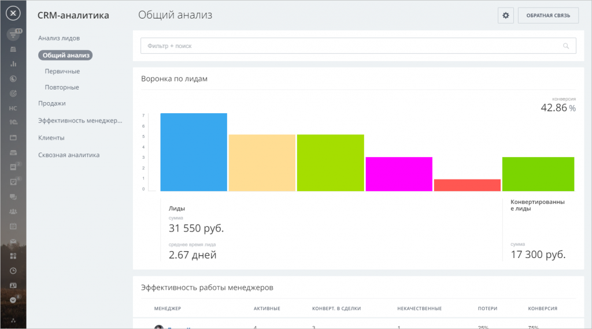Основное преимущество отчётов CRM-аналитики - возможность отфильтровать результаты абсолютно по любым, даже пользовательским, полям.
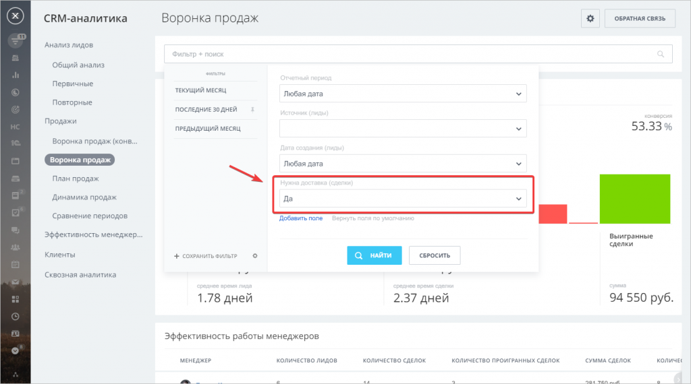Например, мы легко можем составить отчёты отдельно для заказов с доставкой и без.
К тому же, вы можете кликнуть на любое значение, например, сумму или количество активных лидов - и Битрикс24 откроет список соответствующих элементов.
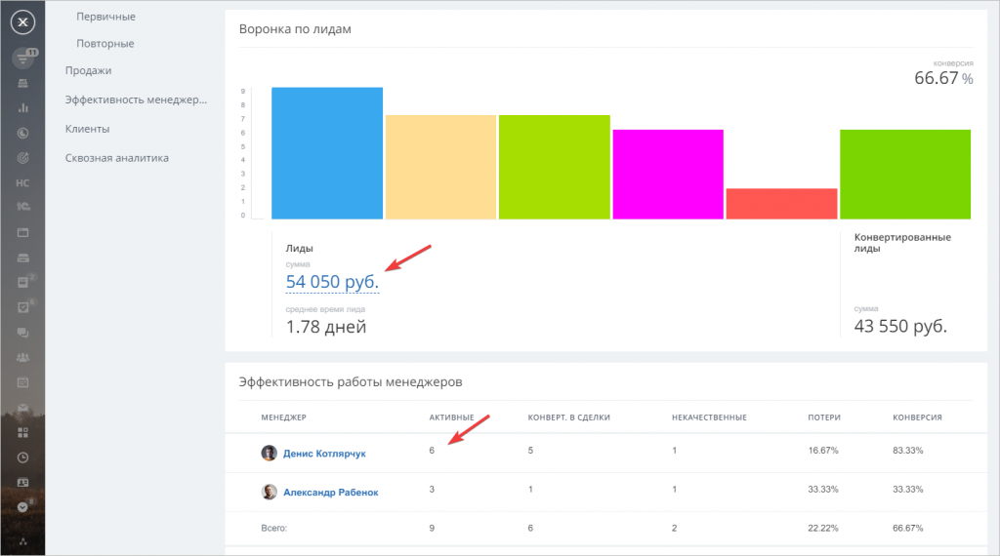Перейдем в пункт левого меню CRM-аналитика. Отчеты делятся на две группы - Анализ лидов и Продажи.
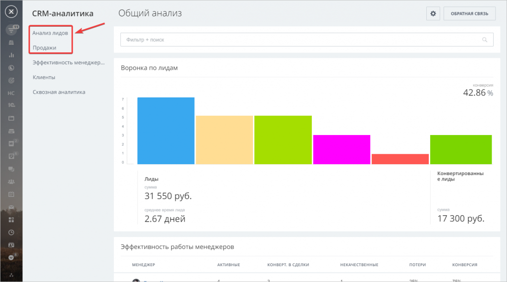Остальные отчёты находятся в разработке и появятся позже.
Начнём с отчёта Общий анализ - он помогает оценить движение лидов по стадиям и работу менеджеров.
Воронка лидов показывает количество элементов, прошедших каждый этап. Наведём курсор на столбец, чтобы увидеть подробную информацию - процент конверсии, сумму и среднюю длительность этого этапа.
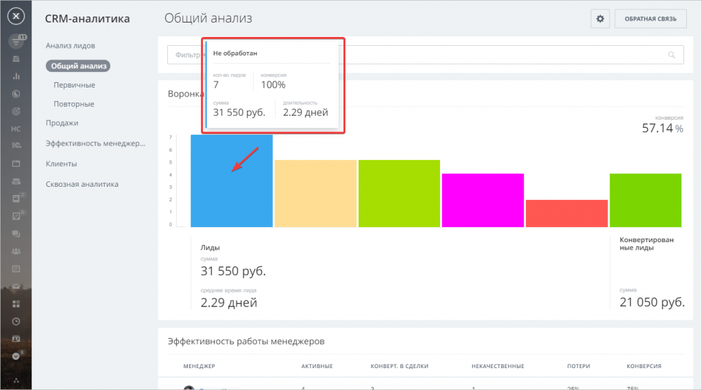Здесь же мы видим общую сумму и среднее время лида - то есть сколько времени проходит от создания лида до его завершения. А также значение конверсии - то есть процент лидов, который был успешно сконвертирован.
Чуть ниже расположен блок эффективности менеджеров. Таблица наглядно показывает качество работы каждого сотрудника - сколько лидов у него в работе, количество выигранных и проигранных элементов, а также общую конверсию.
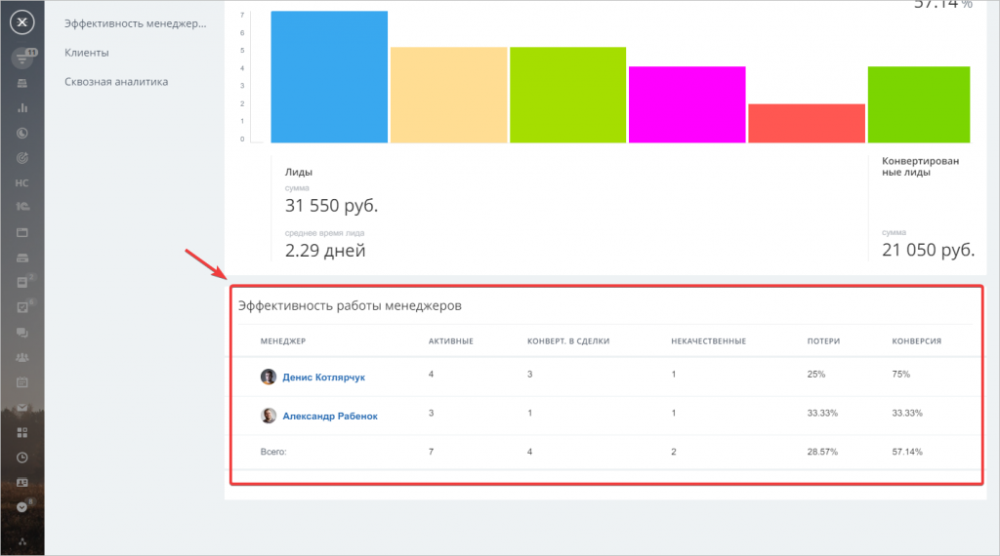Отчет Общий анализ учитывает и первичные и повторные лиды. Вы можете посмотреть отдельный отчет по каждому типу, они имеют похожую структуру.
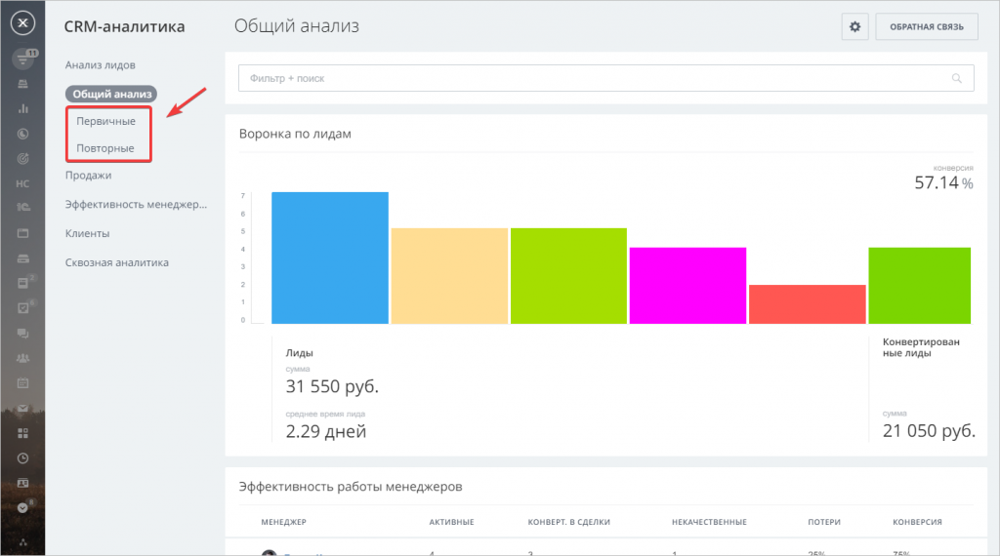Следующий блок - анализ продаж. Тут мы можем проследить процесс продаж от нового лида до успешной сделки, а также оценить динамику сделок.
Отчет Воронка продаж объединяет в себе воронку лидов и сделок
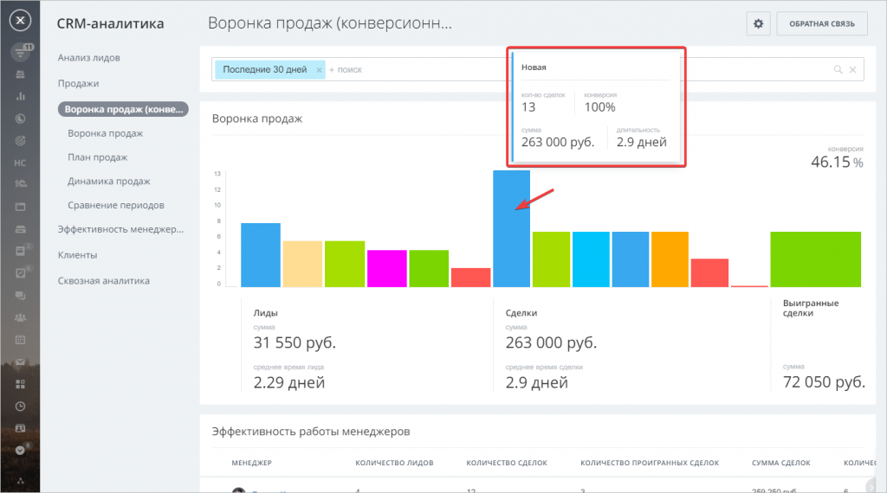В левом меню доступны два варианта воронки - конверсионная и классическая.
График также показывает процент конверсии, среднее время и общую сумму.
Чуть ниже расположена таблица эффективности менеджеров. Она поможет оценить, насколько эффективно сотрудники работают с лидами и доводят их до успешной сделки.
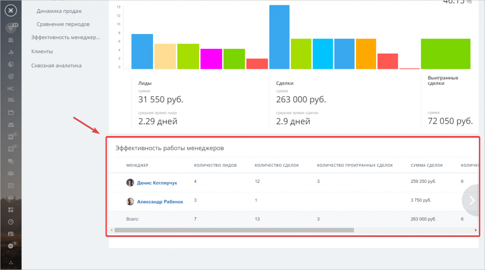Отчёт Динамика продаж показывает распределение сумм сделок по выбранному периоду. Этот отчёт также помогает оценить долю повторных продаж.
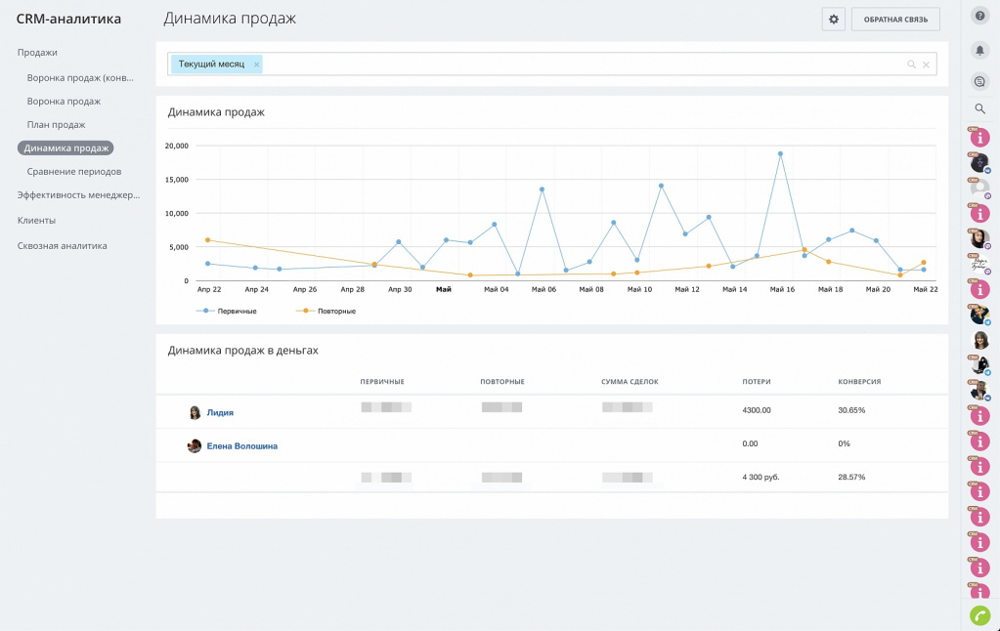Отчёт Сравнение периодов позволит сопоставить продажи за любой период времени с прошлым аналогичным периодом.
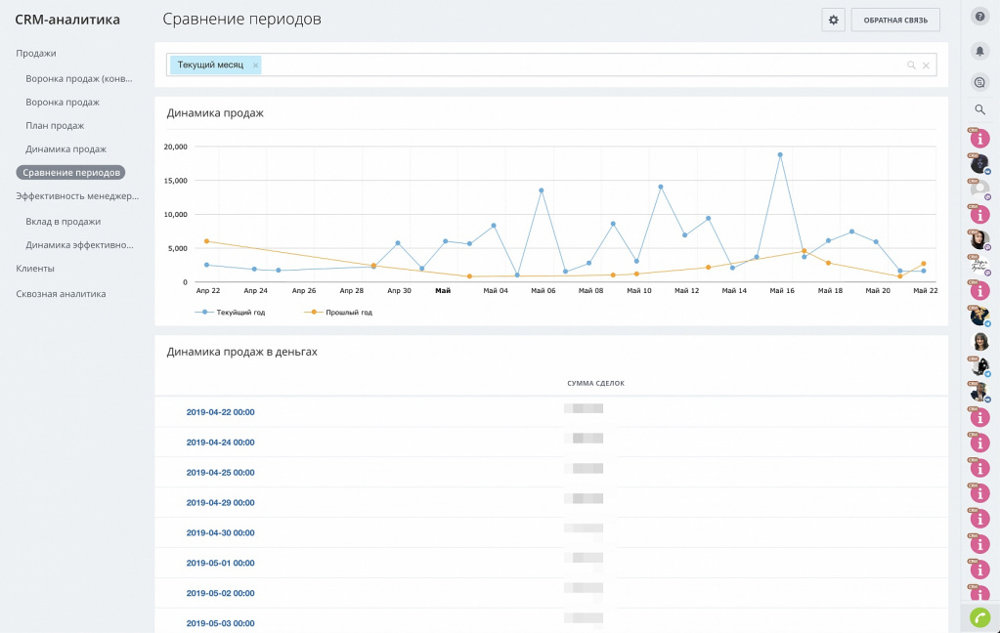Например, вы запустили рекламную кампанию на месяц и хотите оценить её результат. Для этого выберите отчётный период Месяц - и Битрикс24 покажет, насколько выросли продажи в сравнении с прошлым месяцем.
Для CRM-аналитики существует ограничение на количество элементов в отчёте.